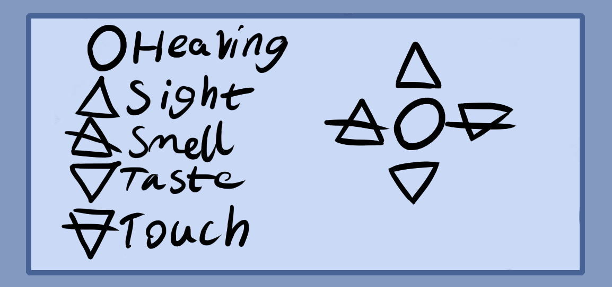

You may wonder why the last three meditations could be performed either visually or tactiley.
Through your practices it is good to develop all five imaginary senses, but sight and feeling are the most important ones. Sight for example lets you set up geometrical arrays or patterns like magic circles and room geometry, while feeling is more of a pressure modulator or controller that lets you set the intensity of a spell.
Ultimately, the imaginary senses that you most develop will be the ones that let you perform your work. And to some extent each of the five senses is loosely connected to one another. You could think of them as different forms of pressure, some higher and some lower.
Magic in one way is an exertion of intention which is kind of like a higher form of feeling. Hence why a well developed tactile sense is important.
